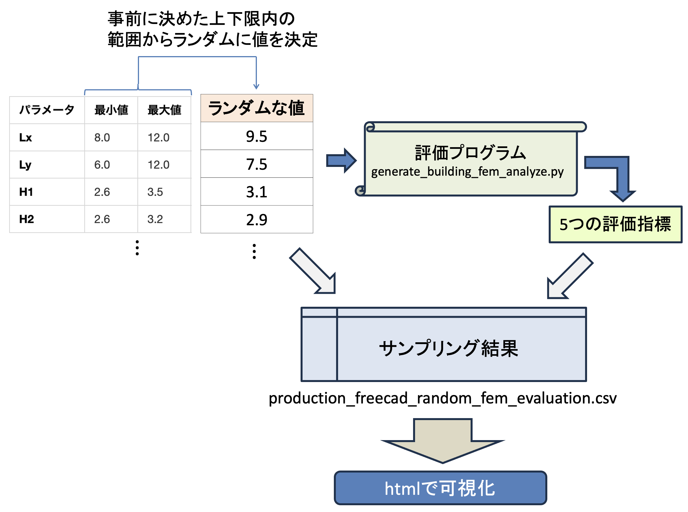

フェーズ2: データ収集と分析マニュアル
1. 概要
このフェーズの目的は，多数の設計案を自動生成・評価し，そのデータを分析することで，設計パラメータが建物の性能（特に安全性）にどのような影響を与えるかの傾向を掴むことです．
AI-Archでは，設計空間を網羅的に探索するためにランダムサンプリングという手法を用いています．
2. 学習ステップ
フェーズ2は，以下の2つのステップで構成されます．
graph TD
subgraph フェーズ2: データ収集と分析
A["ステップ1: データ収集
(ランダムサンプリング)"] --> B["ステップ2: 結果の分析
(インタラクティブダッシュボード)"] end style A fill:#cfd8dc,stroke:#37474f style B fill:#c8e6c9,stroke:#2e7d32
(ランダムサンプリング)"] --> B["ステップ2: 結果の分析
(インタラクティブダッシュボード)"] end style A fill:#cfd8dc,stroke:#37474f style B fill:#c8e6c9,stroke:#2e7d32
ステップ1: データ収集（完了済み）
ランダムサンプリングの手順

パラメータの範囲
random_building_sampler.pyでは，以下の範囲から値をランダムに選択します：
形状パラメータ（14個）
| パラメータ | 最小値 | 最大値 | 単位 |
|---|---|---|---|
建物幅 Lx |
8.0 | 12.0 | m |
建物奥行 Ly |
8.0 | 12.0 | m |
1階高 H1 |
2.6 | 3.5 | m |
2階高 H2 |
2.6 | 3.5 | m |
床スラブ厚 tf |
350 | 600 | mm |
屋根スラブ厚 tr |
350 | 600 | mm |
柱幅 bc |
400 | 800 | mm |
柱高さ hc |
400 | 800 | mm |
外壁厚 tw_ext |
300 | 500 | mm |
壁傾斜角 wall_tilt_angle |
-30 | 30 | 度 |
2階窓比率 window_ratio_2f |
0.1 | 0.9 | - |
屋根形態 roof_morph |
0.0 | 1.0 | - |
屋根シフト roof_shift |
-0.5 | 0.5 | - |
バルコニー奥行 balcony_depth |
1.0 | 3.5 | m |
材料パラメータ（6個）
| パラメータ | 選択肢 | 説明 |
|---|---|---|
柱材料 material_columns |
0 または 1 | 0: コンクリート，1: 木材 |
1階床材料 material_floor1 |
0 または 1 | 0: コンクリート，1: 木材 |
2階床材料 material_floor2 |
0 または 1 | 0: コンクリート，1: 木材 |
屋根材料 material_roof |
0 または 1 | 0: コンクリート，1: 木材 |
外壁材料 material_walls |
0 または 1 | 0: コンクリート，1: 木材 |
バルコニー材料 material_balcony |
0 または 1 | 0: コンクリート，1: 木材 |
実施された内容
random_building_sampler.pyというスクリプトが実行されました．- 上記の範囲内でランダムに値を選択し，400個の異なる建築設計案が自動で生成されました．
- 生成された各設計案は，FEM構造解析によって5つの指標（①安全性，②経済性，③環境性，④快適性，⑤施工性）で評価されました．
- 全ての評価結果は
production_freecad_random_fem_evaluation.csvというファイルに記録されています．
ステップ2: 結果の分析
収集した400件のデータは，インタラクティブなダッシュボードで可視化されています．このダッシュボードを使い，設計の傾向を分析します．
2.1. 分析ツールを開く
400件のサンプリング結果を2つの方法で可視化します．
- 🏢 ランダムサンプリング結果（カード表示）
- 3Dモデル画像と評価指標を一覧表示
-
視覚的に設計案を比較
- 400件の詳細データ分析
- 安全率分析の詳細グラフ
- ⇒ ここで評価関数の傾向を把握します
2.2. 分析のポイント
ダッシュボードを開き，以下の観点でデータを観察・分析してみましょう．
-
安全率と他の指標のトレードオフ関係:
- 左上の「安全率 vs 建設コスト」のグラフを見てください．安全率が高い設計（グラフの右側）は，建設コストも高くなる傾向がありますか？
- 同様に，「安全率 vs CO2排出量」のグラフから，安全性と環境性の関係を読み取ってみましょう．
-
影響の大きい設計パラメータの特定:
- グラフ上の点をクリックすると，その設計のパラメータ詳細が右側に表示されます．
- 例えば，安全率が特に高い（例: 3.0以上）設計案をいくつかクリックし，共通するパラメータ（例: 柱が太い，スラブが厚いなど）がないか探してみましょう．
- 逆に，安全率が低い（例: 2.0未満）設計案に共通する特徴も探してみてください．
-
材料の影響:
- グラフの点は，主要な材料（コンクリート/木材）によって色分けされています．
- 木材主体の設計（茶色系の点）とコンクリート主体の設計（灰色系の点）では，性能にどのような違いが見られますか？
💡 次のステップへのヒント:
この分析を通じて，「安全性を高めるには，このパラメータを大きくすれば良さそうだ」といった仮説を立てることが，次のフェーズ「最適化」に繋がります．
3. まとめ
このフェーズでは，ランダムサンプリングによって得られた400件の設計データを可視化・分析し，設計パラメータと建物性能の間の複雑な関係性について理解を深めました．
ここで得られた知見は，次のフェーズ3「最適化手法」で，より効率的に優れた設計案を見つけ出すための重要な基礎となります．